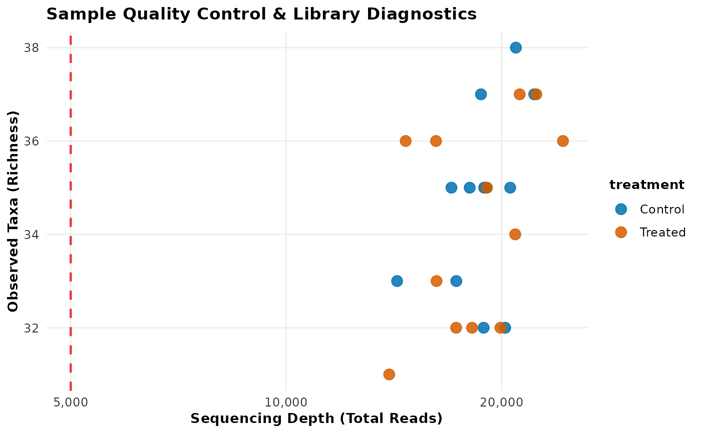

Plot Sample Quality Control Diagnostics
plot_qc.RdGenerates publication-ready diagnostic scatter plots of sequencing library depth versus observed taxonomic richness, with optional threshold lines, log scaling, and metadata grouping.
Usage
plot_qc(
tb,
x = "total_reads",
y = "n_features",
color_by = NULL,
threshold_x = NULL,
threshold_y = NULL,
log_x = (x == "total_reads"),
log_y = FALSE,
palette = "tidybiome"
)Arguments
- tb
A
tidy_microbiomeobject.- x
Metric for the x-axis:
"total_reads","n_features","sparsity", or"top_taxon_share". Defaults to"total_reads".- y
Metric for the y-axis. Defaults to
"n_features".- color_by
Optional metadata column to color points by.
- threshold_x
Optional numeric threshold for vertical dashed cutoff line.
- threshold_y
Optional numeric threshold for horizontal dashed cutoff line.
- log_x
Logical; whether to log10-transform the x-axis (default:
TRUEifx == "total_reads").- log_y
Logical; whether to log10-transform the y-axis (default:
FALSE).- palette
Palette name:
"tidybiome"or"nature".
Value
A ggplot2::ggplot object.
Examples
data(gut_microbiome)
plot_qc(gut_microbiome, color_by = "treatment", threshold_x = 5000)
